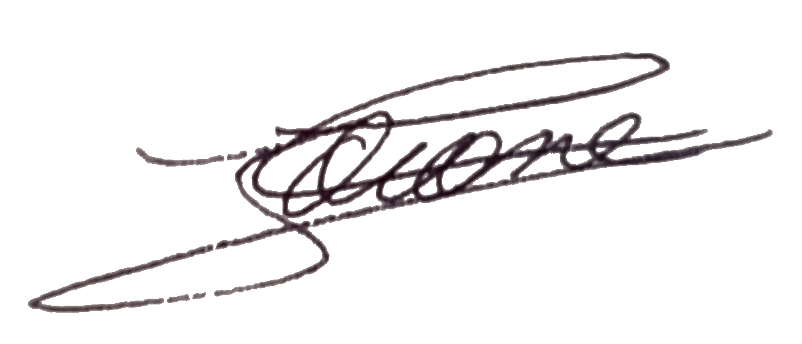

Sapeur 1ere classe Florian FOCONE
CIS Saint-Jean-des-Mauvrets
20 domaine de l'Abbaye
49320 Les Garennes-Sur-Loire
Commandant Xavier METRAS
Chef du Groupement des Opérations et du CTA-CODIS
Service Départemental d’Incendie et de Secours de Maine-et-Loire (SDIS 49)
6 Avenue du Grand Périgné 49071 BEAUCOUZE
Monsieur le Chef du Groupement des Opérations et du CTA-CODIS,
Je vous adresse ma candidature pour le poste de télépilote de drones en tant que sapeur-pompier volontaire 1ère classe au centre de secours de Saint-Jean-des-Mauvrets.
Fort d'une expérience de 4 ans au service de mon secteur opérationnel et du département, j'ai pu diversifier mes missions et acquérir de nouvelles compétences. Aujourd'hui, je souhaite exprimer ma motivation à intégrer l'équipe de télépilotes de drones du SDIS 49.
Mon intérêt pour les engins électroniques télécommandés se reflète dans mes projets personnels, dont l'écriture en cours d'un e-book sur le développement d'un skateboard électrique piloté par smartphone. En tant qu'ingénieur de recherche spécialisé dans l'interaction humain-machine, je suis passionné par la conception electronique et le developpement informatique. Ma maîtrise des langages de programmation tels que le C, C# et Python me permet de programmer des objets connectés, des dispositifs électroniques, ainsi que des interfaces numériques (web et mobile).
Possédant un petit drone que je pilote de façon amateur et à titre personnel, je désire mettre en œuvre mes compétences pour contribuer de manière significative en tant que télépilote au sein de l’équipe que vous montez. Bien que je ne possède pas le CATT, je suis intéressé et disponible pour la semaine de formation en mars. En tant qu'ingénieur de recherche travaillant à l'université à Belle-Beille, à proximité du CODIS, je suis disposé à faire une convention pour m'absenter et participer aux missions.
Si vous recherchez un sapeur-pompier motivé et compétent capable d’assumer les responsabilités opérationnelles et de communication en tant que télépilote de drone, je suis prêt à m'investir pleinement au sein de votre équipe. Je reste à votre disposition pour tout complément d'information et serais honoré de pouvoir discuter de ma candidature lors d'un entretien.
Veuillez agréer, Monsieur le Chef du Groupement des Opérations et du CTA-CODIS, l'expression de mes salutations respectueuses.
Florian Focone
